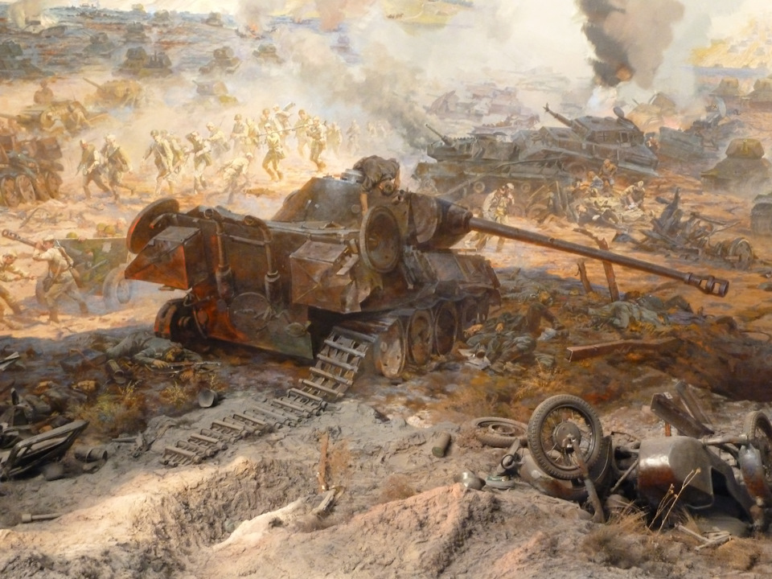

12 июля - памятная дата военной истории Отечества. В этот день в 1943 году под Прохоровкой произошло крупнейшее во Второй мировой войне танковое сражение между советской и германской армиями.
Непосредственное командование танковыми соединениями во время сражения осуществляли генерал-лейтенант Павел Ротмистров с советской стороны и группенфюрер СС Пауль Хауссер - с немецкой. Ни одной из сторон не удалось достичь целей, поставленных на 12 июля: немцам не удалось захватить Прохоровку, прорвать оборону советских войск и выйти на оперативный простор, а советским войскам не удалось окружить группировку противника.
«Безусловно, мы выиграли под Прохоровкой, не позволив противнику прорваться на оперативный простор, заставили его отказаться от своих далеко идущих планов и вынудили отойти в исходное положение. Наши войска выстояли в четырехдневном ожесточенном сражении, а противник утратил свои наступательные возможности. Но и Воронежский фронт исчерпал свои силы, что не позволило ему сразу же перейти в контрнаступление. Сложилась, образно говоря, патовая ситуация, когда командование той и другой стороны еще хотят, а войска уже не могут!»
| Назад | На главную | Вперед |